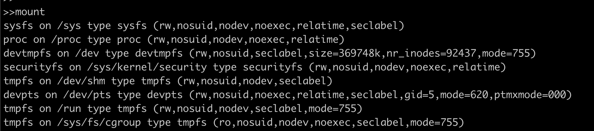
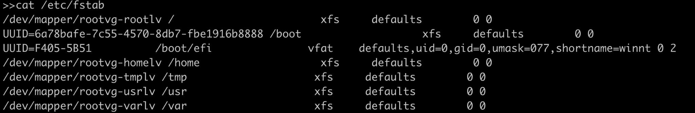
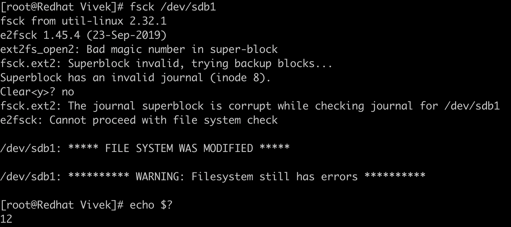
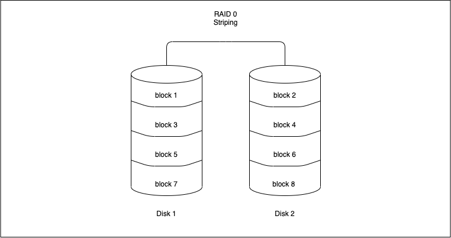
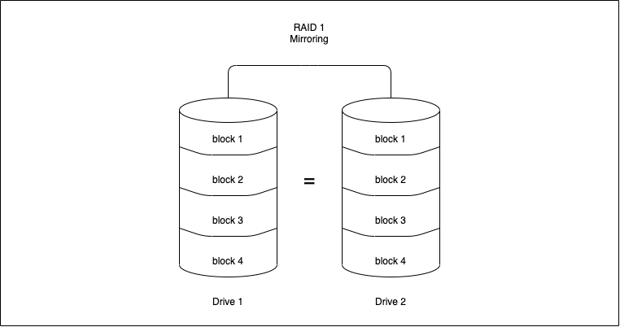
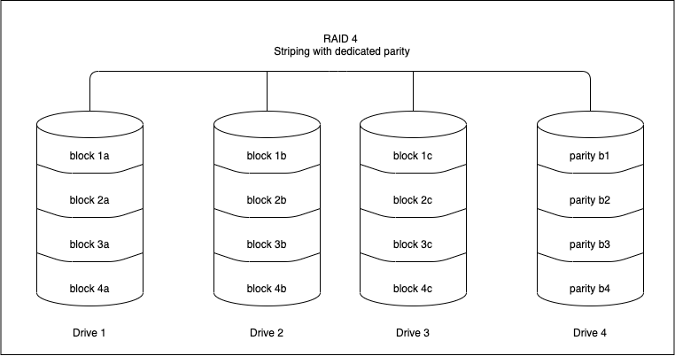
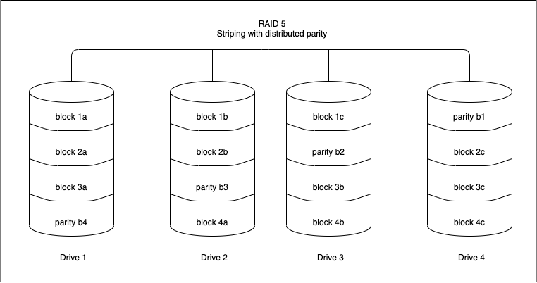
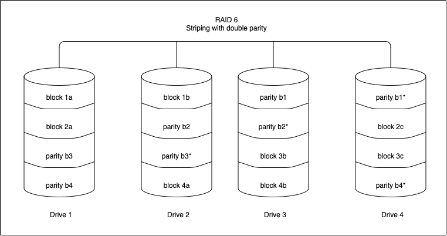
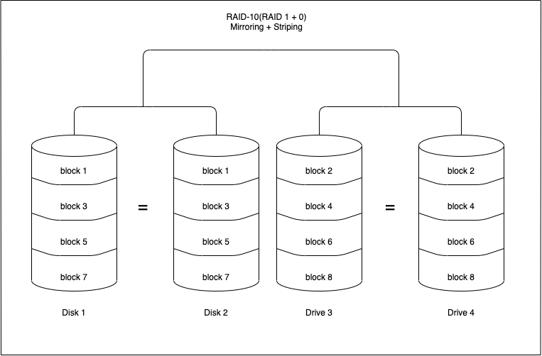

存儲媒體
介紹
存儲媒體是用來儲存數據和資訊的設備。Linux 在處理外部設備（包含存儲設備）方面有極好的功能。存儲設備種類繁多，包括實體存儲設備如硬碟，虛擬存儲設備如 RAID 或 LVM，網路存儲等等。
在本節中，我們將學習如何操作任何存儲設備並根據需求進行配置。
列出已掛載的存儲設備：
我們可以使用命令 mount 來列出所有已掛載到電腦的存儲設備。

上述輸出的格式為：
device on mount_point type file_system_type (options)
例如第一行虛擬設備 sysfs 掛載在 /sys 路徑，其文件系統為 sysfs。現在我們來看看什麼是文件系統以及如何建立文件系統。
建立文件系統
想像一個磁碟上的所有數據都是一整塊大數據，無法分辨哪筆數據開始或結束、數據在哪個位置，因此出現了文件系統 (fs)。文件系統負責在任何存儲設備上進行數據的存儲、索引與檢索。
以下是最常用的文件系統：
| 文件系統類型 | 描述 |
|---|---|
| FAT | 文件分配表，最初用於 DOS 與 Microsoft Windows，現在廣泛用於可攜 USB 存儲裝置 |
| NTFS | (New Technology File System) 用於 Microsoft Windows 系統 |
| ext | 用於 Linux 系統的延伸文件系統 |
| ext4 | 第四代延伸文件系統，是 Linux 核心常用的日誌型文件系統 |
| HFS | 階層式文件系統，使用直到 Mac OS 8.1 推出 HFS+ |
| HFS+ | 支援文件系統日誌功能，能在系統當機後恢復數據 |
| NFS | 原自 Sun Microsystems 的網路文件系統，是 UNIX 類網路標準 |
我們將嘗試使用 mkfs 建立一個 Linux 原生的 ext4 文件系統。
警告：請在空磁碟上執行此命令，因為它會抹除現有資料。
此例中將設備 /dev/sdb1 格式化為 ext4 文件系統。
掛載設備：
在 Linux 系統中，所有檔案以 (/) 為根，排列成樹狀結構。掛載文件系統即是將該文件系統載入 Linux 的目錄樹某路徑，使其可訪問。
我們需要指定一個掛載點（位置）來掛載上面格式化的設備。
我們建立了掛載點 /mount，並以 mount 命令將文件系統掛載。此處 -t 參數指定文件系統類型，接著是設備名稱 /dev/sdb1 與掛載點 /mount。
卸載設備：
接下來，看如何卸載設備。若為可攜式存儲媒體，想在另一台主機掛載就必須先卸載。我們使用 umount 來卸載設備。
第一次嘗試卸載 /sdb1 失敗，因為我們正位於該設備的目錄並使用中。切換回家目錄後，成功卸載設備。
用 /etc/fstab 文件簡化掛載？
在生產環境中，伺服器可能有多個存儲設備需要掛載，每次重新開機都逐一手動掛載非常不方便。為了簡化，我們可以使用稱為 “fstab” 的配置表（通常位於 /etc/fstab）。

範例中第一行為 /dev/mapper/rootvg-rootlv（存儲設備）掛載在系統根目錄 / ，文件系統為 xfs，後面接掛載選項。
修改後可執行 mount -a 來重新讀取此檔案。
檢查與修復文件系統
硬體故障、斷電或不當關機有可能造成文件系統損壞。Linux 通常於啟動時自動檢查並修復有問題的磁碟，也可以使用命令 fsck 手動檢查。

可用 fsck -y /dev/sdb1 修復指定文件系統。
文件系統錯誤會返回不同錯誤代碼並以其加總表示：
| 錯誤代碼 | 描述 |
|---|---|
| 0 | 無錯誤 |
| 1 | 文件系統錯誤已修正 |
| 2 | 系統應重新啟動 |
| 4 | 文件系統錯誤未修正 |
| 8 | 運作錯誤 |
| 16 | 使用或語法錯誤 |
| 32 | 使用者取消檢查 |
| 128 | 共享函式庫錯誤 |
上述檢查回傳代碼為 12，即錯誤代碼 8（運作錯誤）與 4（未修正錯誤）之和。
RAID
RAID（獨立磁碟冗餘陣列）是一種將輸入/輸出分散到多磁碟以提高性能與資料冗餘的技術。RAID 可提升磁碟整體效能並抵抗磁碟故障。軟體 RAID 使用 CPU 執行 RAID 操作，硬體 RAID 則用磁碟控制器上的專用處理器管理磁碟。RAID 三項重要功能為鏡像、條帶和奇偶校驗。
RAID 級別
下方說明常見的 RAID 級別，關於所有 RAID 級別的資訊，請參考 此處。
RAID 0（條帶）
條帶技術將資料切分成「區塊」並分散寫入陣列中的所有磁碟。多磁碟同時存取可提升讀寫速度。陣列中第一個磁碟會在每個磁碟寫入相同資料大小前不再重用。

優點
- 實作簡單。
- 避免單一磁碟 I/O 成為瓶頸，提升效能。
缺點
- 無冗餘功能，一旦磁碟故障，所有資料將喪失且無法復原。
使用場景
適用對資料安全性要求不高，須高速讀取的環境，如影片/音訊編輯工作站或遊戲環境。
RAID 1（鏡像）
鏡像會將相同資料寫入陣列的每個磁碟，意即資料會被多次複製。這會導致寫入速度比單磁碟慢，但讀取可並行執行，提升速度。

優點
- 讀取效能優於 RAID 0 或單磁碟。
- 可承受多個磁碟故障而無需特殊資料恢復演算法。
缺點
- 成本高昂，因資料多倍複製，實際有效容量約只剩一半。
使用場景
用於要求低停機時間但可接受寫入性能稍降的應用。
RAID 4（帶專用奇偶校驗的條帶）
RAID 4 採用區塊級條帶，使用指定磁碟存放奇偶校驗資訊。奇偶校驗由演算法在寫入資料時產生，能檢測資料完整性。若磁碟故障，可透過剩餘資料與奇偶校驗資訊還原遺失資料。

優點
- 陣列中每個磁碟獨立運作，I/O 請求並行進行，性能較前 RAID 級別提升。
- 可承受多個磁碟故障，無需特別資料恢復演算法。
缺點
- 需三顆磁碟以上設置。
- 需要硬體支援奇偶校驗計算。
- 寫入速度慢，因奇偶校驗集中於單一磁碟，每次 I/O 都須修改奇偶校驗區塊。
使用場景
適合處理大文件，尤其是順序讀寫操作。
RAID 5（帶分散奇偶校驗的條帶）
RAID 5 同 RAID 4 類似，但奇偶校驗資訊分散存放於所有磁碟中，減少寫入奇偶校驗的單一磁碟瓶頸。是最常見的安全 RAID 級別。

優點
- 讀取速度快，寫入稍慢因需要計算奇偶校驗。
- 硬碟故障時仍可存取資料，且替換硬碟時控制器會重建資料。
缺點
- 需最低3顆磁碟，可支援至多16顆。
- 需要硬體支援奇偶校驗計算。
- 若兩顆以上硬碟同時故障，會導致資料遺失。
使用場景
檔案存儲與應用伺服器，如郵件與一般存儲用途。
RAID 6（帶雙重分散奇偶校驗的條帶）
RAID 6 類似 RAID 5，但具有雙重分散奇偶校驗，可容忍兩顆硬碟同時故障。

優點
- 讀取速度快。
- 容錯能力提升，可耐受兩顆硬碟故障。
- 比 RAID 5 更堅韌。
缺點
- 寫入速度慢，因雙重奇偶校驗計算。
- RAID 重建時間較長。
使用場景
辦公自動化、線上客服及需極高可用性的應用。
RAID 10（RAID 1+0：鏡像與條帶結合）
RAID 10 是 RAID 0 與 RAID 1 的組合，即同時實現鏡像與條帶。

優點
- RAID 重建速度快。
- 讀寫性能良好。
缺點
- 同 RAID 1，一半的磁碟容量可用。
- 實施成本較高。
使用場景
用於需要高性能與高資料安全性的交易型資料庫。
RAID 監控指令
指令 cat /proc/mdstat 可顯示軟體 RAID 狀態。範例如下：
Personalities : [raid1]
md0 : active raid1 sdb1[2] sda1[0]
10476544 blocks super 1.1 [2/2] [UU]
bitmap: 0/1 pages [0KB], 65536KB chunk
md1 : active raid1 sdb2[2] sda2[0]
10476544 blocks super 1.1 [2/2] [UU]
bitmap: 1/1 pages [4KB], 65536KB chunk
md2 : active raid1 sdb3[2]
41909248 blocks super 1.1 [2/1] [_U]
bitmap: 1/1 pages [4KB], 65536KB chunk
「Personalities」顯示 RAID 類型；以上範例配置為 RAID 1。md0 : active raid1 sdb1[2] sda1[0] 表示 sdb1（設備 2）和 sda1（設備 0）間有活躍的 RAID 1。非活躍陣列表示有磁碟故障。md2顯示 [2/1] [_U] 表示此 RAID 有一顆磁碟故障。
指令 mdadm --detail /dev/<raid-array> 可取得陣列詳細資訊，範例：
sudo mdadm --detail /dev/md0
/dev/md0:
Version : 1.1
Creation Time : Fri Nov 17 11:49:20 2019
Raid Level : raid1
Array Size : 10476544 (9.99 GiB 10.32 GB)
Used Dev Size : 10476544 (9.99 GiB 10.32 GB)
Raid Devices : 2
Total Devices : 2
Persistence : Superblock is persistent
Intent Bitmap : Internal
Update Time : Sun Dec 2 01:00:53 2019
State : clean
Active Devices : 2
Working Devices : 2
Failed Devices : 0
Spare Devices : 0
UUID : xxxxxxx:yyyyyy:zzzzzz:ffffff
Events : 987
Number Major Minor RaidDevice State
0 8 1 0 active sync /dev/sda1
1 8 49 1 active sync /dev/sdb1
若磁碟缺失，陣列狀態會是 'dirty'，Active Devices 與 Working Devices 會減少到一個，其中一個磁碟 (視缺失而定) RaidDevice 狀態會標示為 faulty。
LVM
LVM 代表邏輯卷管理。在前述章節中，我們使用傳統方式以單一磁碟建立文件系統，但透過 LVM 可以更靈活配置儲存空間，例如將三顆 2TB 磁碟串接成一個 6TB 分區，或新增一顆 4TB 實體磁碟並加入邏輯卷組，合計成 10TB。
欲了解更多 LVM，請參考：https://www.redhat.com/sysadmin/lvm-vs-partitioning